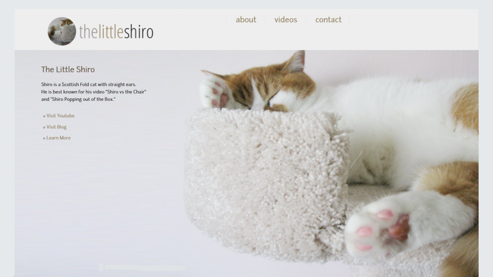
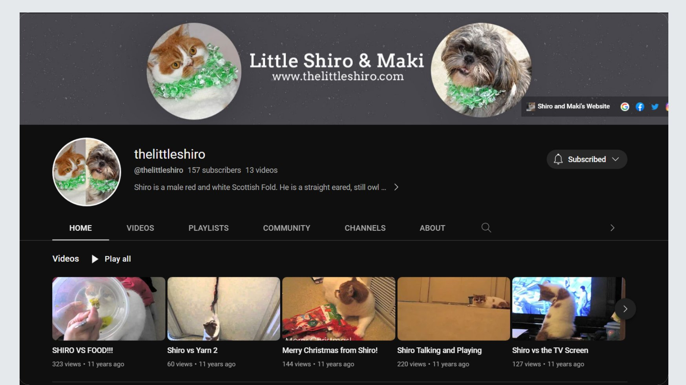
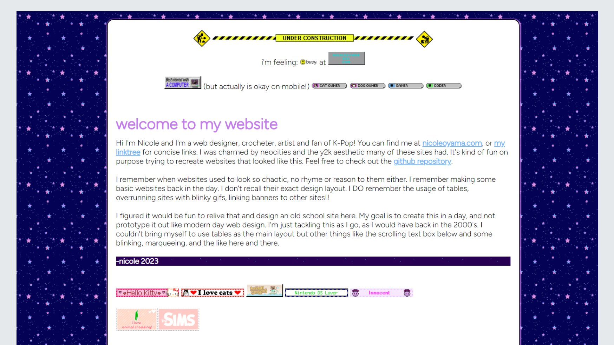
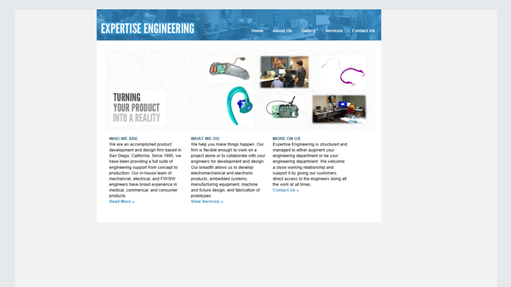

Little Shiro & Maki
Hello I'm Nicole!


Little Shiro & Maki

Nafisah Tung – A portfolio site for Nafisah Tung.

Y2k: A vintage website done in modern day HTML/CSS.

Exp Eng: A client project, website for an Engineering Company.